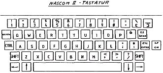

Nascom Journal |
Oktober 1981 · Ausgabe 10 |
erzeugt in ihrer Leseleitung (Bild 4,S0-S6) durch das Differenzierglied aus C1,R8,R9 einen kurzen Nadelimpuls (Bild 5,IC2(5) F), der von einem Leseverstärker (Transistorarrays IC1,IC9) in den Pufferspeicher (RS-Flip-Flop IC7,IC2,IC8) eingeschrieben wird.
Aus der Anzahl der von der Software ausgegebenen Taktimpulse und der Nummer des zu diesem Zeitpunkt gesetzten Datenbits (aktiv low) am „Sense-Output“, ermittelt dann das Monitorprogramm über Codetabellen den zur gedrückten Taste gehörenden ASCII Charakter.
Nach jeweils einem Zählerdurchlauf für die acht Schreibleitungen werden die Pufferspeicher zurückgesetzt (high) und der Abfragezyklus beginnt von neuem.
Falls dieselbe Taste beim nächsten Zählzyklus immer noch gedrückt ist, wird dies von der Software festgestellt und nicht weiterbearbeitet (Entprellung durch Software).
Die Tastaturbelegung des Nascom II ist aus Bild 2 ersichtlich Die Tasten, es sollten Originaltasten sein, können einfach nach dem Bohren der vier Löcher für die Anschlußpins in der Epoxyplatine in die Halterung eingedrückt werden. Sie verriegeln sich im Halteblech von selbst und sind damit mechanisch fest eingebaut.
Das Monitorprogramm Nassys 1 unterstützt den vollen ASCII-Code und benutzt verschiedene CNTRL-Codes zur Cursorsteuerung. Um die erforderlichen Codes direkt zu erzeugen, d.h. ohne die Nutzung der CNTRL-Taste, muß eine weitere Leseleitung (S6) eingfügt werden, denn es wird ein Datenbit mehr benötigt.
Dazu werden acht der neu eingebauten Tasten verwendet. Zum Einbau der Leseleitung wird einfach ein dünner isolierter Draht, am besten Wire-Wrap-Draht, an dem aus C1,R8,R9 bestehenden Differenzierglied angelötet und, wie in Bild 3 dargestellt, über die neu eingebauten Tasten in beliebiger Reihenfolge durchgeschaltet.

Für die acht Schreibleitungen (D0-D7) muß jeweils mit einem geeigneten Werkzeug die Leiterbahn zu einer ebenfalls in dieser Schreibleitung liegenden Taste unterbrochen und über die neu einzufügende Taste wieder verbunden werden. Die Anschlußpins der Tasten dürfen dabei nicht vertauscht werden, da sich sonst die Stromrichtung im Übertrager umkehrt. Mit dem Einfügen der Tasten in die jeweiligen Schreibleitungen ist die Tasten-Code-Zuordnung festgelegt (siehe Bild 2,Bild 3 und Bild 4).
Die neue Leseleitung (S6) wird dann in der aus Bild 4 ersichtlichen Weise über einen Leseverstärker (freier Transistor in IC1 ) auf die als Pufferspeicher benutzten freien NAND-Gates in IC3 geschaltet. Die dazu notwendigen Bauelemente R40,R41 und R42 müssen an einer leiterbahnfreien Stellen auf der Platine montiert werden. Der „Sense-Output“ des S6-Puffers wird dann mit Pin 7 des Sockels (SK 1) für das Keyboardverbindungskabel verbunden.
Weiter empfehlenswert ist es, eine der neu eingebauten Tasten als SHIFT-Taste auf der linken Seite vorzusehen. Dazu müssen nur die Lese- und Schreibleitung der rechten Taste aufgetrennt und über die neue linke SHIFT-Taste wieder verbunden werden.
Bei Inbetriebnahme unter Nassys 1 müssen die neu eingebauten Tasten, falls keine Fehler gemacht wurden, die aus Bild 4 zu entnehmenden Punktionen auslösen. Die GRAFIK-Taste kann natürlich nur dann sinnvoll sein, wenn eine GRAFIK-Erweiterung vorhanden ist.
| Seite 18 von 28 |
|---|